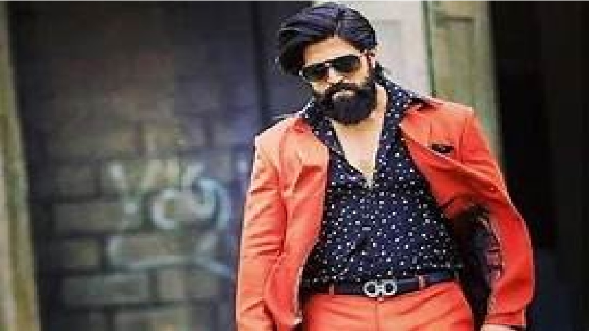

YASH

to know more about him click here
Naveen Kumar Gowda, better known by his stage name Yash, is an Indian actor who works predominantly in Kannada cinema. He is one of the most successful and highest-paid actors in the industry. Wikipedia
Born: January 8, 1986 (age 37), Boovanahalli, Hassan district, Karnataka, India
Height: 5'11" (1.80m)
Spouse: Radhika Pandit (m. 2016-present)
Education: K.L.E. Society's S. Nijalingappa College
Important works: K.G.F: Chapter 2, K.G.F: Chapter 1, Mr. and Mrs. Ramachari, Drama
| born |
education |
height |
movies |
spouse |
| January 8, 1986 (age 37), Boovanahalli, Hassan district, Karnataka, India |
K.L.E. Society's S. Nijalingappa College |
5'11" (1.80m) |
21 movies |
Radhika Pandit |
Won Filmfare Awards South in 2009 for Best Supporting Actor – Kannada(Moggina Manasu)
The Times of India noted that the success of Googly contributed to Yash's increasing stardom and put him on the path to becoming one of the leading stars of the industry
In 2014, he starred in Gajakesari, which was directed by Krishna, and became commercially successful at the box office
His next film Mr. and Mrs. Ramachari opposite Radhika Pandit had its theatrical release on 25 December 2014, and opened to positive reviews and collected an estimated ₹50 crore, and went on to become one of the highest grossing Kannada cinema
In 2015, he acted in Masterpiece, which emerged as a commercial hit at the box office
K.G.F: Chapter 1 emerged to be a pan-Indian film, earning him nationwide recognition